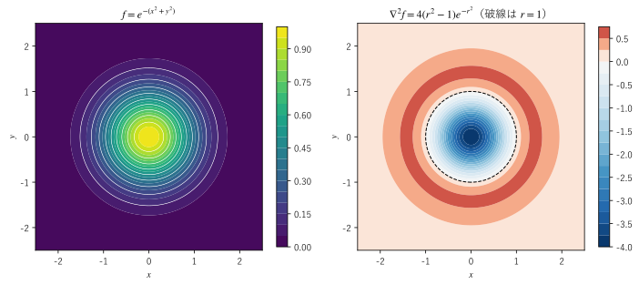

第 8 章 ナブラを含む公式とラプラシアン
勾配・発散・回転を組み合わせたり、場の積に作用させたりすると、多くの公式が得られる。この章では、積の微分公式と 2 階の微分の公式をまとめ、特に重要な「勾配の回転は 0」「回転の発散は 0」の意味を説明する。後半では、勾配の発散であるラプラシアンを導入し、その意味を「周囲の平均との差」として理解する。
積の微分公式
1 変数の微分には積の微分公式 \((fg)' = f'g + fg'\) がある。ナブラは偏微分を並べたものなので、場の積に作用させたときにも同様の公式が成り立つ。\(f, g\) をスカラー場、\(\bm{F}, \bm{G}\) をベクトル場とする。
番号 |
公式 |
|---|---|
\(\nabla (fg) = f \nabla g + g \nabla f\) |
|
\(\nabla \cdot (f\bm{F}) = \nabla f \cdot \bm{F} + f \, \nabla \cdot \bm{F}\) |
|
\(\nabla \times (f\bm{F}) = \nabla f \times \bm{F} + f \, \nabla \times \bm{F}\) |
|
\(\nabla \cdot (\bm{F} \times \bm{G}) = \bm{G} \cdot (\nabla \times \bm{F}) - \bm{F} \cdot (\nabla \times \bm{G})\) |
|
\(\nabla \times (\bm{F} \times \bm{G}) = \bm{F} (\nabla \cdot \bm{G}) - \bm{G} (\nabla \cdot \bm{F}) + (\bm{G} \cdot \nabla) \bm{F} - (\bm{F} \cdot \nabla) \bm{G}\) |
|
\(\nabla (\bm{F} \cdot \bm{G}) = (\bm{F} \cdot \nabla) \bm{G} + (\bm{G} \cdot \nabla) \bm{F} + \bm{F} \times (\nabla \times \bm{G}) + \bm{G} \times (\nabla \times \bm{F})\) |
は第 5 章で示した。(2) は成分で書けばすぐに確かめられる。
も同様に成分で確かめられる。(4) から (6) も成分で確かめられるが、式が長くなる。添字を使った短い証明は付録 B で示し、この章では後で SymPy を使って確かめる。
と (6) に現れる \((\bm{F} \cdot \nabla) \bm{G}\) は、演算子
を \(\bm{G}\) の各成分に作用させたベクトルである。\(\bm{F}\) が単位ベクトルなら、\((\bm{F} \cdot \nabla) \bm{G}\) は \(\bm{G}\) の \(\bm{F}\) の向きの方向微分（第 5 章）を成分ごとに並べたものになる。流体の速度 \(\bm{v}\) を使った \((\bm{v} \cdot \nabla) \bm{v}\) は、流れに乗って動いたときの速度の変化を表し、流体の運動方程式に現れる（第 17 章）。
公式の覚え方
これらの公式は、次の 2 つの規則を組み合わせると覚えやすい。
積の微分：ナブラは積の各因子に順に作用する。たとえば (2) では、\(f\) に作用した項と \(\bm{F}\) に作用した項の和になる。
ベクトルの公式：作用する相手を決めたら、ナブラを普通のベクトルとみなしてベクトルの公式を当てはめる。(4) はスカラー三重積の性質、(5) はベクトル三重積の公式 \(\bm{a} \times (\bm{b} \times \bm{c}) = \bm{b}(\bm{a} \cdot \bm{c}) - \bm{c}(\bm{a} \cdot \bm{b})\)（第 2 章）に対応する。
ただし、ベクトルの公式を当てはめるときは、ナブラが作用する場をナブラの右側に置かなければならない。(5) の \((\bm{G} \cdot \nabla) \bm{F}\) は、ベクトル三重積の公式の \(\bm{b}(\bm{a} \cdot \bm{c})\) で \(\bm{a} = \nabla\) が \(\bm{b} = \bm{F}\) に作用する項を、作用する相手が右に来るように並べ替えたものである。覚え方はあくまで目安であり、符号や順序に迷ったら成分で確かめるのが確実である。
2 階の微分
勾配・発散・回転を 2 回続けて使う組み合わせのうち、作用させる場の種類（スカラー場かベクトル場か）が合うものは次の 5 通りである。
組み合わせ |
結果 |
内容 |
|---|---|---|
勾配の発散 \(\nabla \cdot (\nabla f)\) |
スカラー場 |
ラプラシアン \(\nabla^2 f\) |
勾配の回転 \(\nabla \times (\nabla f)\) |
ベクトル場 |
常に \(\bm{0}\) |
発散の勾配 \(\nabla (\nabla \cdot \bm{F})\) |
ベクトル場 |
特別な名前はない |
回転の発散 \(\nabla \cdot (\nabla \times \bm{F})\) |
スカラー場 |
常に 0 |
回転の回転 \(\nabla \times (\nabla \times \bm{F})\) |
ベクトル場 |
\(\nabla (\nabla \cdot \bm{F}) - \nabla^2 \bm{F}\) |
以下、この表の公式を説明する。場は 2 回連続して偏微分でき、2 階の偏導関数が連続であるとする。
勾配の回転は 0
\(\nabla f\) の回転の \(x\) 成分は
である。偏微分の順序を交換できる（シュワルツの定理。第 4 章）ので、2 つの項は等しい。\(y, z\) 成分も同様なので
が成り立つ。勾配で表されるベクトル場は渦なしの場である（第 7 章）。たとえば、位置エネルギーの勾配で表される力 \(\bm{F} = -\nabla U\) は、回転が \(\bm{0}\) である。形式的には、同じベクトルどうしの外積 \(\bm{a} \times \bm{a} = \bm{0}\) に対応する。
回転の発散は 0
\(\nabla \times \bm{F}\) の発散を成分で書くと
となる。偏微分の順序を交換できるので、たとえば \(\partial^2 F_z / \partial x \partial y\) の項と \(-\partial^2 F_z / \partial y \partial x\) の項が打ち消し合い、全体は 0 になる。
回転で表されるベクトル場は、発散のない場である（第 6 章）。形式的には、同じベクトルを 2 つ含むスカラー三重積 \(\bm{a} \cdot (\bm{a} \times \bm{b}) = 0\) に対応する。磁束密度 \(\bm{B}\) を別のベクトル場の回転として \(\bm{B} = \nabla \times \bm{A}\) と表す（ベクトルポテンシャル）と、\(\nabla \cdot \bm{B} = 0\) が自動的に満たされる。
(9) と (10) の逆、つまり「渦なしの場は勾配で表せるか」「発散のない場は回転で表せるか」は、場が定義されている領域の形に依存する。これは第 16 章で扱う。
回転の回転
回転の回転には次の公式がある。
右辺の \(\nabla^2 \bm{F}\) はベクトル場のラプラシアンであり、次節で定義する。この公式はベクトル三重積の公式で \(\bm{a} = \bm{b} = \nabla\)、\(\bm{c} = \bm{F}\) とした形をしている。\(x\) 成分を書き下すと
となる（最後の行では \(\partial^2 F_x / \partial x^2\) を足して引いた）。この公式は、マクスウェル方程式から電磁波の波動方程式を導くときに使う（第 17 章）。
ラプラシアン
勾配の発散をラプラシアン（Laplacian）という。
演算子 \(\nabla^2 = \partial^2 / \partial x^2 + \partial^2 / \partial y^2 + \partial^2 / \partial z^2\) は、ナブラと自分自身の内積の形をしている。数学の本では \(\Delta f\) と書くことも多い。本書では \(\nabla^2 f\) と書く。
計算例を示す。
\(f = r^2 = x^2 + y^2 + z^2\) では、\(\nabla^2 f = 2 + 2 + 2 = 6\) である。
\(f = x^2 - y^2\) では、\(\nabla^2 f = 2 - 2 = 0\) である。
\(f = 1/r\) では、第 5 章の \(\nabla (1/r) = -\bm{r}/r^3\) と、第 6 章の \(\nabla \cdot (\bm{r}/r^3) = 0\) から、\(\nabla^2 (1/r) = 0\)（\(r \neq 0\)）である。
ベクトル場 \(\bm{F}\) のラプラシアン \(\nabla^2 \bm{F}\) は、直交座標では成分ごとのラプラシアンを並べたベクトル場である。
曲線座標系では基底ベクトルが場所によって変わるため、成分ごとのラプラシアンにはならない。そのときは (11) を逆に使い、\(\nabla^2 \bm{F} = \nabla (\nabla \cdot \bm{F}) - \nabla \times (\nabla \times \bm{F})\) で計算する（第 9 章）。
ラプラシアンは、熱伝導方程式、波動方程式、ラプラス方程式、ポアソン方程式など、工学の主要な偏微分方程式に現れる（第 16 章、第 17 章）。
ラプラシアンの意味
ラプラシアンは、「ある点の値が、周囲の平均からどれだけずれているか」を表す。1 変数で考えると分かりやすい。2 階微分は
と近似でき、両隣の平均と中心の値の差に比例する。\(f'' > 0\)（下に凸）なら中心は両隣の平均より低く、\(f'' < 0\)（上に凸）なら高い。
2 次元でも同じことが成り立つ。点 \(\bm{p}\) を中心とする半径 \(h\) の円周上での \(f\) の平均を \(\bar{f}(h)\) とする。円周上の点を \(\bm{p} + (h\cos t, h\sin t)\) と表し、\(f\) を 2 次の項までテイラー展開すると、1 次の項と \(\cos t \sin t\) の項は円周を一周すると平均が 0 になる。残るのは \(\cos^2 t\) と \(\sin^2 t\) の項で、その平均はどちらも \(1/2\) なので
となる。つまり
である。3 次元で半径 \(h\) の球面上の平均を考えると、同様に \(\bar{f}(h) \approx f(\bm{p}) + (h^2/6) \nabla^2 f(\bm{p})\) となる。
\(\nabla^2 f > 0\) の点では、\(f\) は周囲の平均より小さい（谷の底のような形）。
\(\nabla^2 f < 0\) の点では、\(f\) は周囲の平均より大きい（山の頂上のような形）。
この関係を数値で確かめる。円周上の平均を SciPy で数値積分し、\(4(\bar{f} - f) / h^2\) を計算する。
17def circle_mean(f_num: Callable[[float, float], float], cx: float, cy: float, h: float) -> float:
18 """中心 (cx, cy)、半径 h の円周上での関数 f_num の平均値を数値積分で求める."""
19 total = integrate.quad(lambda t: f_num(cx + h * math.cos(t), cy + h * math.sin(t)), 0.0, 2.0 * math.pi,
20 epsabs=1.0e-12, epsrel=1.0e-12)[0]
21 return float(total / (2.0 * math.pi))
f = x**3 + x*y**2 + sin(y)
ラプラシアン = 8*x - sin(y), 点 (1.0, 0.5) での値 = 7.520574
h = 0.5 円周上の平均 - 中心の値 = 0.47050085, 4 (平均 - 中心の値) / h^2 = 7.528014
h = 0.1 円周上の平均 - 中心の値 = 0.01880219, 4 (平均 - 中心の値) / h^2 = 7.520874
h = 0.01 円周上の平均 - 中心の値 = 0.00018801, 4 (平均 - 中心の値) / h^2 = 7.520577
f = x**2 - y**2
ラプラシアン = 0, 点 (1.0, 0.5) での値 = 0.000000
h = 0.5 円周上の平均 - 中心の値 = 0.00000000, 4 (平均 - 中心の値) / h^2 = 0.000000
h = 0.1 円周上の平均 - 中心の値 = 0.00000000, 4 (平均 - 中心の値) / h^2 = 0.000000
h = 0.01 円周上の平均 - 中心の値 = 0.00000000, 4 (平均 - 中心の値) / h^2 = 0.000000
1 つ目の関数では、\(h\) を小さくすると \(4(\bar{f} - f) / h^2\) がラプラシアンの値 7.520574 に近づく。2 つ目の関数 \(x^2 - y^2\) はラプラシアンが 0 であり、円周上の平均は \(h\) によらず中心の値に等しい。
サンプルの全体：ch08_laplacian_mean.py
図 11 は、山の形をしたスカラー場 \(f = e^{-(x^2 + y^2)}\) と、そのラプラシアン \(\nabla^2 f = 4(r^2 - 1) e^{-r^2}\)（\(r^2 = x^2 + y^2\)）を色で表したものである。山頂の付近（\(r < 1\)）では周囲より高いのでラプラシアンは負、山のすそ（\(r > 1\)）では下に凸の形になるので正である。


図 11 山の形をしたスカラー場とそのラプラシアン
サンプルの全体：ch08_laplacian_bump.py
この「周囲の平均との差」という見方は、ラプラシアンを数値計算するときにそのまま使える。2 次元の格子の間隔を \(h\) とすると、上下左右の 4 点の平均と中心の値の差から
と近似できる。この差分による近似は第 18 章で使う。
調和関数
\(\nabla^2 f = 0\) を満たす関数を調和関数という。方程式 \(\nabla^2 f = 0\) はラプラス方程式と呼ばれる。上の \(x^2 - y^2\) や、原点以外での \(1/r\) は調和関数である。
調和関数は、どの点でも値が周囲の平均に等しい。実際、調和関数では円周（3 次元では球面）上の平均が、半径によらず中心の値に厳密に一致する（平均値の性質）。この性質から、定数でない調和関数は領域の内部で最大値も最小値もとらず、最大値と最小値は領域の境界でとる（最大値原理）。理由は次のとおりである。内部の点 P で最大値をとったとすると、P を中心とする小さな円周上の値はどれも P の値以下であり、しかもその平均は P の値に等しい。したがって、円周上の値はすべて P の値に等しい。半径を変えても同じことがいえるので、P の周りで関数は一定になる。これを領域全体に広げていくと、関数は定数になってしまう。最小値も同じである。たとえば、時間がたって変化しなくなった温度分布は調和関数になる（第 17 章）。そのため、内部に熱源がなければ、最も熱い点と最も冷たい点は必ず境界にある。
SymPy で公式を確かめる
この章の公式が任意のスカラー場とベクトル場で成り立つことを、SymPy で確かめる。sp.Function("f")(x, y, z) は、具体的な形を決めない \(x, y, z\) の関数を表す。勾配・発散・回転を偏微分で定義し、各公式の「左辺 − 右辺」を展開して 0 になるかを調べる。
14def grad(f: sp.Expr) -> Vec:
15 """スカラー場 f の勾配."""
16 return (sp.diff(f, x), sp.diff(f, y), sp.diff(f, z))
17
18
19def div(a: Vec) -> sp.Expr:
20 """ベクトル場 a の発散."""
21 return sp.diff(a[0], x) + sp.diff(a[1], y) + sp.diff(a[2], z)
22
23
24def curl(a: Vec) -> Vec:
25 """ベクトル場 a の回転."""
26 return (sp.diff(a[2], y) - sp.diff(a[1], z),
27 sp.diff(a[0], z) - sp.diff(a[2], x),
28 sp.diff(a[1], x) - sp.diff(a[0], y))
29
30
31def laplacian(a: Vec) -> Vec:
32 """ベクトル場 a のラプラシアン（直交座標では成分ごとのラプラシアン）."""
33 return tuple(div(grad(c)) for c in a)
34
35
grad(fg) = f grad g + g grad f 成り立つ
div(fF) = grad f . F + f div F 成り立つ
rot(fF) = grad f x F + f rot F 成り立つ
div(F x G) = G . rot F - F . rot G 成り立つ
rot(F x G) = F div G - G div F + (G . nabla)F - (F . nabla)G 成り立つ
grad(F . G) = (F . nabla)G + (G . nabla)F + F x rot G + G x rot F 成り立つ
rot(grad f) = 0 成り立つ
div(rot F) = 0 成り立つ
rot(rot F) = grad(div F) - laplacian F 成り立つ
すべての公式が成り立つことが確かめられた。SymPy は偏微分の順序を区別しない（\(\partial^2 f / \partial x \partial y\) と \(\partial^2 f / \partial y \partial x\) を同じ式として扱う）ので、この確認はシュワルツの定理が成り立つ場を前提にしている。
サンプルの全体：ch08_identities.py
この章のまとめ
ナブラを場の積に作用させると、積の微分とベクトルの公式を組み合わせた形の公式が得られる。迷ったら成分で確かめる。
勾配の回転は常に \(\bm{0}\)、回転の発散は常に 0 である。勾配の場は渦なし、回転の場は発散がない。
回転の回転は \(\nabla (\nabla \cdot \bm{F}) - \nabla^2 \bm{F}\) である。
ラプラシアン \(\nabla^2 f\) は勾配の発散であり、ある点の値と周囲の平均との差を表す。
ラプラシアンが 0 の調和関数は、平均値の性質を持ち、定数でなければ領域の内部で最大値・最小値をとらない（最大値原理）。